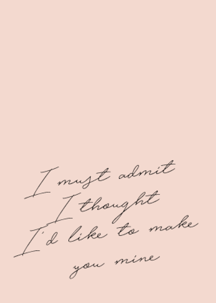

Only Angel is my fifth favorite Harry Styles song. It's the sixth track off his frist album. I really like how it starts off soft and quite then the instruments come in full bast, and it turns into a soft rock song. For me this is a great song to go for a run to because I can get my steps to line up with the beat.

Lyrics
Open up your eyes, shut your mouth and see
That I'm still the only one who's been in love with me
I'm just happy getting you stuck in between my teeth
And there's nothing I can do about it
Broke a finger knocking on your bedroom door
I got splinters in my knuckles crawling across the floor
Couldn't you take home to mother in a skirt that short
But I think that's what I like about it
She's an angel
Only angel
She's an angel
My only angel
I must admit I thought I'd like to make you mine
As I went about my business through the warning signs
End up meeting in the hallway every single time
And there's nothing we can do about it
Told it to her brother and she told it to me
That she's gonna be an angel, just you wait and see
When it turns out she's a devil in between the sheets
And there's nothing she can do about it
Hey, hey
She's an angel
Only angel
She's an angel
My only angel
She's an angel
Only angel
She's an angel
My only angel
Wanna die, wanna die, wanna die tonight
Wanna die, wanna die, wanna die tonight
Wanna die, wanna die, wanna die tonight
She's an angel
Only angel
She's an angel
My only angel
She's an angel
She's an angel
My-my-my only angel